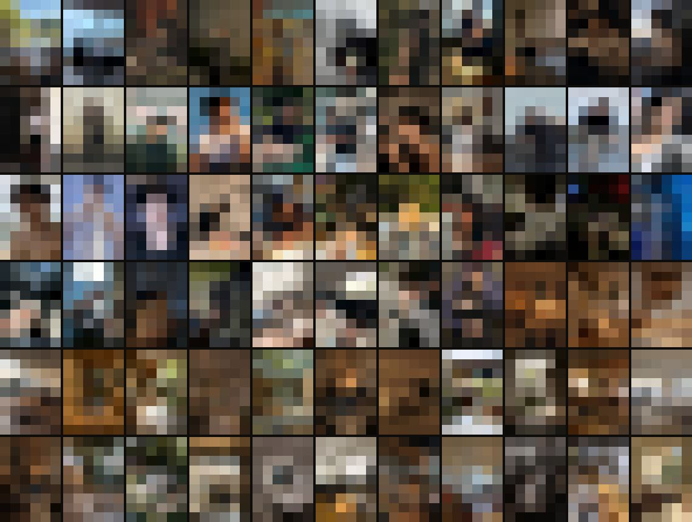
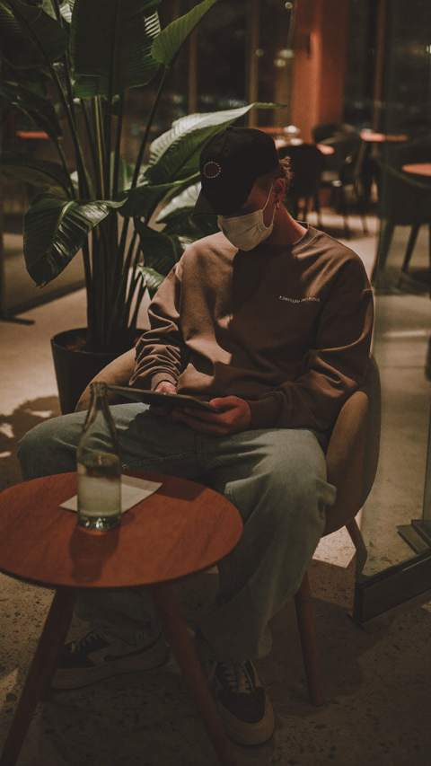
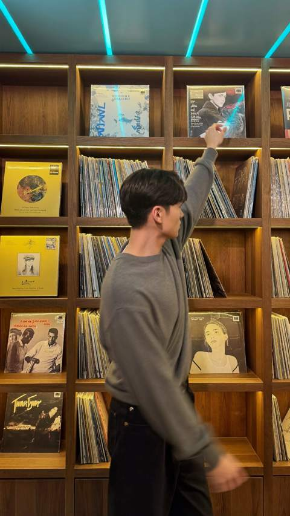
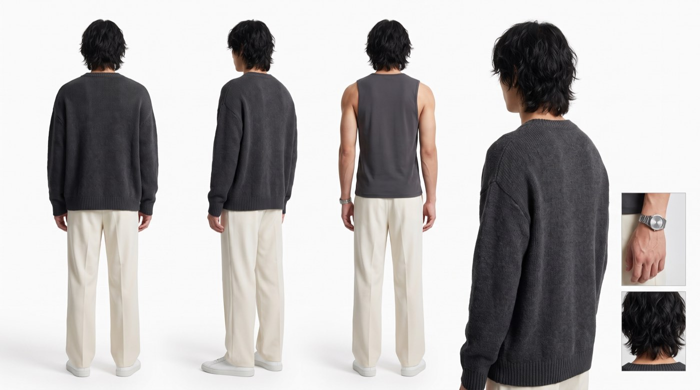
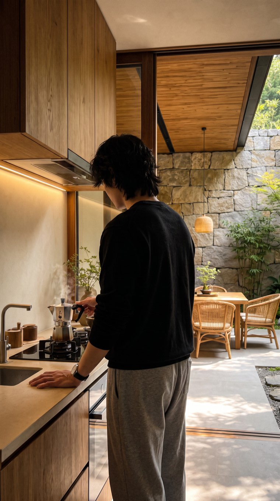
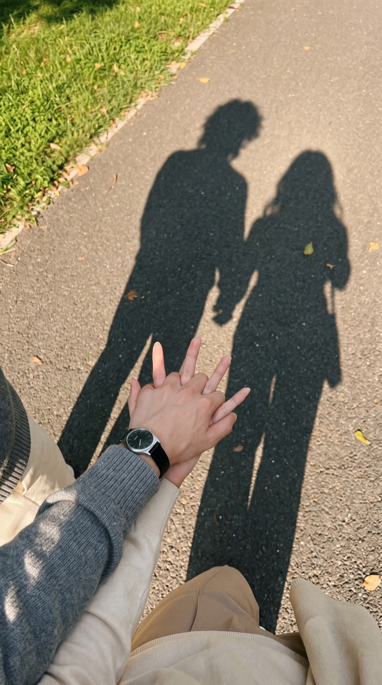
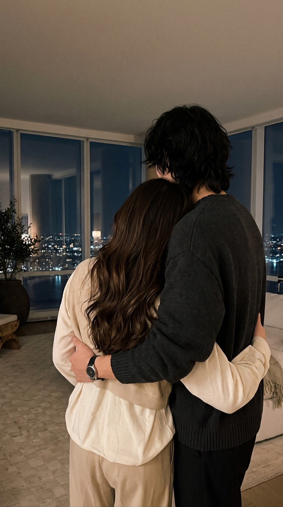

왜 시작했나
요즘 AI 인플루언서 릴스·쇼츠는 조회수가 잘 나온다. 중국의 팡타오쯔는 "전부 AI로 만든다"고 밝히고도 도우인 팔로워 40만을 모았다. 광고 단가는 동급 인간 인플루언서보다 높아서, 20초 한 편에 약 3,500만 원을 받는다.
작년에 비슷한 걸 해봤다. AriaLook이라는 AI 패션 쇼츠 채널을 4주 돌려 43편, 총 조회 17,789회. 숫자보다 아픈 건 과정이었다. 만드는 건 AI가 하는데 확인은 내가 해야 했다. 사진마다 눈·코·손가락 개수를 셌고, 클립을 이어 붙일 때마다 얼굴이 달라졌다. 퇴근하고 돌리는 투잡의 병목이 GPU가 아니라 내 눈이라는 걸 그때 알았다. (회고: 검수 지옥 · 정산)
그래서 이번 목표는 콘텐츠가 아니라 시스템이었다. 사람은 마지막에 고르기만 하면 되는 구조. 저 '느좋' 감성을, 내가 병목이 되지 않고 뽑을 수 있을까.
08.14 – 08.16 · 수집
말로 설명하면 갓챠다
'느좋'을 AI에게 글로 설명해 본 적이 있다면 안다. 말로 옮기는 순간 그 느낌은 사라지고, 생성은 뽑기가 된다. 원하는 게 나올 때까지 계속 돌리는 것이다.
느낌과 감성을 텍스트로 전달하기 어려우니 레퍼런스를 모은거야.— 세션 로그, 08.14
마침 YC 디자인 총괄의 워크플로를 다룬 영상을 봤다(채널에 쓴 소개: 1편 · 2편). 핀터레스트에서 분위기 사진을 모으고, 화면 효과를 고르고, 제품 철학을 문서로 만든 다음, 그 셋을 다 주고 나서야 AI에게 시킨다. 좋은 디자인은 말로 설명되지 않으니 설명 대신 참고 사진을 쌓는 것이다.
같은 방식으로 짰다. 내가 폰으로 핀터레스트에 마음에 드는 사진을 저장하면, 30분마다 프로그램이 그걸 가져다 디스코드 채팅방에 올린다. 올리기 직전에 AI가 사진을 뜯어보고 여섯 가지(감성·장소·아이템·상황·조명·구도)로 태그를 붙인다. 내가 하는 일은 저장뿐이다.
실제로 채팅방에 올라온 첫 게시물이다. 태그를 다시 읽어 보시라. 카메라 정면 응시, 얼굴 중심 클로즈업. 이 사진들이 몇 시간 뒤에 문제가 된다.
그렇게 사진 66장이 태그가 붙은 채로 쌓였다. 이 태그들은 나중에 AI에게 주는 지시문과 합격 기준에 그대로 옮겨 적는 어휘가 된다.

일요일 밤, 처음으로 전 과정을 돌려 봤다. 자동으로 모인 사진 50장에서 출발해 후보 이미지 4장, 내 승인, 5초짜리 세로 영상까지 한 번에 끝까지 갔다. 비용은 8크레딧 남짓. 미리 뽑아 둔 견적과 실제 청구액이 끝자리까지 같았다.
그리고 결과물을 보고 처음 한 말은 "인물이 마음에 안 든다"였다. 합격 여부도 정직하게 갈렸다. 움직임과 작업 흐름은 합격, 얼굴은 불합격.
08.17 · 새벽 두 시간
기록되는 갓챠도 갓챠다
주인공 얼굴을 정하는 작업. 한 번에 여러 장씩 세 번 뽑았고, 세 번 다 전부 탈락시켰다.
짜증이 나서 "그냥 레퍼런스 얼굴을 그대로 써라"고 했다. 그리고 여기서 제동이 걸렸다.
검수를 맡은 AI가 참고 사진 한 장의 왼쪽 아래에서 팬사이트 워터마크를 찾아냈다. 내가 '느좋남 참고용'이라며 모은 사진들의 정체는 실존 아이돌과 배우였다. 팬이 직접 찍어 올린 사진이 섞여 있었던 것이다. 앞에서 본 첫 게시물의 태그가 이미 그 사실을 말하고 있었다.
조건은 '어디서 가져왔나'가 아니라 '그 얼굴의 초상권을 갖고 있나'입니다.— AI가 얼굴 학습을 거부하며, 03:55
맞는 말이라 반박을 못 했다. 대안은 셋이었다. 본인 얼굴을 찍기, 라이선스 얼굴을 사기, 합성 얼굴 하나를 확정하기. AI는 "권리가 있는 얼굴 사진을 여기 넣어달라"는 안내와 함께 빈 폴더를 만들어 뒀다. 그 폴더는 지금까지 비어 있다.
그리고 새벽 4시 5분, 이 프로젝트에서 제일 중요한 말이 나온다.
이걸 방지할 앱을 만들어서 작업하려고 하는거였고, 앱을 어떻게 만들지를 고민해야 되는데 — 왜 지금 너랑 내가 갓챠 작업을 하고 있는 거지?— 04:05
이틀 동안 35장을 뽑았고 컨셉은 다섯 번 바뀌었는데, 정작 원래 하려던 검증은 한 발짝도 못 나간 상태였다. 생성할 때마다 기록은 규칙대로 남겼으니 갓챠가 아니라고 스스로 착각한 것이다. 기록되는 갓챠도 갓챠다. 갓챠의 정의는 기록의 부재가 아니라 확정 없는 반복이다.
그날 스스로 점검한 기록에 "앱이 있었다면 어디서 막혔을까"를 표로 정리했다. 그 표가 그대로 만들려던 도구의 요구사항이 됐다.
| 실제로 일어난 일 | 앱이 있었다면 어디서 막혔을까 |
|---|---|
| 합격 기준 없이 생성 시작 | "무엇이 나오면 합격인가"를 적어야 시작 가능 |
| 전부 탈락하면 곧장 새 방법으로 다시 생성 | 전부 탈락하면 기획 단계로 되돌아가게 강제 |
| 대화 도중 컨셉을 다섯 번 즉석에서 변경 | 컨셉을 바꾸면 앞서 만든 것들이 어떻게 되는지 경고 |
08.17 · 같은 새벽
페이스리스
사실 앞의 04:05 지적이 나오기 몇 분 전에, 답은 이미 나와 있었다. 초상권에 막히고 3분 뒤다.
얼굴이 정면으로 나오지 않고 누군지 알 수 없는 형태로 만들어서 이슈를 피하는 방식으로 진행하자. 어때?— 03:58
돌아보면 재미있는 대목이 있다. 그때까지 모은 인물 사진 25장 중 16장이 이미 얼굴이 안 보이는 컷이었다. 내가 무의식적으로 저장하던 '느좋'은 애초에 얼굴이 아니었던 거다. 뒷모습, 후드, 어깨 너머, 창가의 실루엣.
기술적으로도 반전이 있었다. 쓰던 AI는 참고 사진을 주면 장면은 통째로 따라 그리면서 얼굴만 자꾸 딴사람으로 만들었다. 캐스팅 내내 나를 괴롭힌 바로 그 결함이, 얼굴을 감추는 콘텐츠에서는 정확히 원하는 동작이 된다. 매번 똑같이 유지해야 할 게 얼굴에서 머리 모양·체형·색감·공간으로 바뀌기 때문이다.
얼굴이 가려진 사진 4장을 골라 한 장씩 만들어 봤다. 3장 통과, 1장 탈락.


낮이 되어 컨셉도 확실히 정했다. 타깃은 한국 남자를 좋아하는 글로벌 여성 시청자, K-드라마에서 볼 법한 인스타 감성의 쇼츠·릴스. 얼굴을 감추는 게 여기서 한 번 더 쓸모가 생긴다. 커플 컷으로 가면 상대역 여성의 얼굴도 없으므로, 시청자가 그 자리에 자신을 넣는다.
08.17 낮 · 재료 먼저
재료부터
순서를 다시 세웠다. 장면을 만들기 전에, 그 장면들이 함께 쓸 재료를 먼저 확정한다. 인물 설정 이미지, 의상, 그리고 장면마다 분위기의 원본이 될 사진. (나중에 안 사실이지만, 28억짜리 AI 영화 팀의 제작 원칙 1번도 정확히 이 문장이다.)

여기서 정당한 의심이 하나 나왔다. 참고 사진을 통째로 기준 삼으면 결국 원본과 똑같아지는데, 그건 베끼기지 창작이 아니지 않냐는 것이다.
그래서 재료를 칸칸이 나눠 봤다. 인물은 설정 이미지에서, 의상은 인물 사진에서, 장소는 분위기 사진에서 가져오고, 행동만 글로 줬다. 어느 사진에도 없는 '모카포트로 커피 내리기'.

성공했다. 각 사진에 "이건 의상만 참고할 것, 나머지는 무시" 같은 역할을 못 박아 서로 섞이지 않게 한 결과다. 사진을 통째로 베끼지 않고도 새 장면이 나온다는 건 확인됐다.
같은 날 태그가 문서를 이긴 사건도 있었다. 캐릭터 설정에 "심플 메탈 시계"라고 박아두고, 그걸 근거로 가죽 스트랩 제안을 기각한 적이 있다. 그런데 내가 모은 사진 속 시계를 전부 세어 보니 정작 검은 가죽이 다수였다. 설정을 데이터 쪽으로 고쳤다. 말로 적어둔 취향보다 손으로 모은 취향이 정확했다.
08.17 오후 · 에피소드
잘 나온다. 그런데 그 느낌이 아니다
재료가 갖춰지고 나서야 실제 콘텐츠를 만들기 시작했다. 첫 편 "조용한 저녁"은 혼자 나오는 장면 네 개. 사진은 열 장 중 여덟 장이 합격했고, 그 사진으로 만든 영상 네 편은 전부 첫 시도에 성공했다. 규칙을 어긴 것도 없었다. 새벽 캐스팅에서 한 장도 못 건졌던 걸 생각하면 완전히 다른 국면이다.
직접 판정해 보시라.
지금 것은 영상 자체는 생성 잘 됐지만, 내가 전혀 원하는 느낌의 영상은 아니야.— 16:13 · 영상 네 편 모두 "원하는 느낌이 아님"으로 탈락
기술적인 항목은 전부 합격인데 결과물은 전부 탈락한다. 이게 이 실험이 찾은 진짜 문제다.
첫 편을 버리고 커플이 나오는 쪽으로 방향을 틀면서, 이번엔 커플 사진 8장에서 다시 출발했다. 그리고 이 실험에서 가장 값진 한 쌍이 나왔다. 같은 AI, 같은 비용. 차이는 하나, 분위기의 원본이 될 사진을 지정했는가.


왼쪽은 커플 사진 한 장을 원본으로 놓고 그대로 따라 만든 것이다. 그 사진에 붙어 있던 태그가 결과물에 고스란히 있다. "위에서 내려다본 시점·손 중심의 클로즈업·나란히 드리운 두 사람의 그림자." 인물만 우리 캐릭터로 갈아 끼웠다. 오른쪽은 장소 사진만 참고하고 장면 자체는 글로 지시한 유일한 컷이다. 잘 나왔다. 그리고 탈락했다.
인물 구도 같은 것을 마음대로 바꾸면 감성이 깨진다.— 17:06 · 그대로 앱 요구사항이 됐다
AI에게 "느낌" 채점표를 쥐여주는 길도 있었다. 이번엔 가지 않았다. 대신 검사를 둘로 나눴다. 규칙대로 만들었는지, 기록이 맞는지처럼 기계가 확인할 수 있는 건 AI가 맡고, "이게 그 느낌인가"는 사람이 본다. AI가 영상을 봤다고 주장하게 만드는 항목은 아예 규칙에서 지웠다.
그날 저녁 6시, 영상 생성을 멈췄다. 기계가 볼 수 있는 건 다 통과했고 사람만 볼 수 있는 건 다 떨어졌으니, 더 만들어 볼 이유가 없었다.
08.18 · 대조군
28억짜리 대조군
실험을 멈추기로 한 날 아침, The Cully Hill Boys 리서치를 걸어뒀다. AI로 만든 110분짜리 액션 코미디로, 25~28명이 4주 동안 약 28억 원을 썼고, 그 절반이 AI를 돌리는 비용이다. 주연으로 쓴 실존 인물의 얼굴은 전부 정식으로 사용 계약을 맺었다. (Forbes · Daily Maverick — 제작 방법론 쪽은 보도 기반이니 감안하고 볼 것.)
그들의 제작 원칙 1번이 "재료를 전부 확정한 뒤에만 생성을 시작한다"였다. 새벽에 얻어맞으며 배운 것과 같은 문장이다.
정작 쓸모 있었던 건 그들이 인정한 약점 쪽이다. 완성작에 남은 약점으로 꼽은 게 인물끼리 몸이 닿는 연기였다. 내 마지막 에피소드가 정확히 그거였다. 무릎베개, 맞잡은 손, 포옹. 28억을 써도 "모델이 아직 못 한다"고 인정된 지점 위에 내 컨셉이 서 있었던 셈이다. 규모의 문제가 아니었다.
정산
여기서 멈추는 이유
자동화 자체는 성공이다. 사진을 모으는 일부터 기록까지 사람 손 없이 돌아가고, 실패한 생성은 환불까지 저절로 처리된다. 그런데 발행한 콘텐츠는 0편이다.
"이 느낌이 맞나"를 기계에 맡기려면 채점 기준을 만들어야 한다. 못 할 일은 아니다. 사람이 고르고, 그 판단을 기준으로 옮겨 적고, 다시 돌려 보며 기준을 조이는 일을 충분히 반복하면 된다.
문제는 그 반복에 드는 재료가 전부 돈이라는 것이다. 이미지도 영상도 하나 만들 때마다 비용이 나가고, 판정석에 앉는 사람은 다시 나다. 그리고 작년에 그 과정을 이미 겪어 봤다. AriaLook 4주가 정확히 그 작업이었고, 시간도 돈도 그렇게 썼다. 채점 기준을 다 만들어 콘텐츠를 뽑아냈다 해도 조회수가 따라온다는 보장은 없다. 43편에 1.8만 회가 그때의 답이었다.
그래서 여기서 멈춘다. 감성이 자동화 불가능해서가 아니라, 지금 그 채점 기준을 만드는 데 돈을 더 쓸 만큼, 돌아올 게 확실하지 않아서다.
남은 건 세 문장이다. 감성은 사진이 나른다 — 말로 설명되는 느낌이었으면 애초에 갓챠가 아니었다. 얼굴은 권리다 — 어디서 가져왔는지는 중요하지 않고, 얼굴을 지웠더니 오히려 시청자가 들어올 자리가 생겼다. 그리고 기록되는 갓챠도 갓챠다 — 규칙을 손에 들고도 갓챠를 했다는 사실이, 필요한 게 규칙이 아니라 구조라는 가장 정직한 근거였다.
사진을 모으는 이 자동화는 다음 프로젝트가 그대로 쓴다. 실제로 멈추기로 한 그날 저녁, 종료를 선언하기 38분 전에 같이 작업하는 뮤지션의 핀터레스트 보드가 같은 파이프라인의 세 번째 채널로 합류했다. 다음에 할 건 원작이 이미 있는 콘텐츠다. 감성을 처음부터 발명할 필요가 없는 곳에서, 이 파이프라인이 다시 돈다.